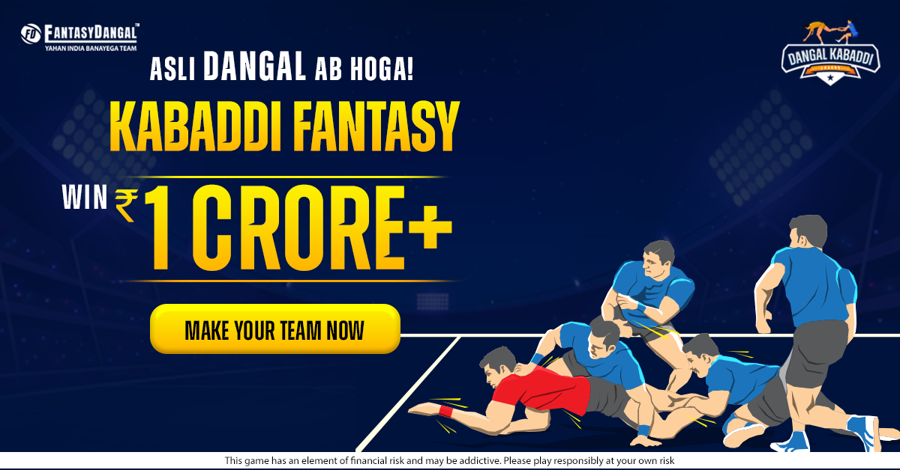

Play Fantasy Kabaddi App Online & Win Real Cash

Hey there, our Kabaddi fans! Knock your knuckles and get ready to play your favourite game with all the due excitement. We are here with your favourite game, Fantasy Kabaddi App! Not just play, but earn money as well to the core. Get fantasy Dangal app and download free for Kabaddi and many other games as well. If you are new to fantasy kabaddi app, don’t worry. We are here to tell you all about the game and how to play. So without any further ado, let’s get into the detailing of fantasy kabaddi.
What is Fantasy Kabaddi?
Kabaddi is a famous sport. It is played in many parts of India. The proper skills of the sport have to be learned by the player because it is not an easy one, friend!
So, now adding some crisp to the game, we have made it available online as well. Making it much more exciting for you, you also have an option to earn money with the game as well. However, with Fantasy Dangal with your side, you can create your team in fantasy Kabaddi. Also, pour all the wise thoughts while choosing your squad for the game. Always select the captain and the vice-captain with utmost thoughts in the game. Your half of the game depends on them as well.
Also, for a plus point to be added, the captain, as well as the vice-captain, tend to fetch you extra points, so be careful! Play online fantasy kabaddi and have the chance to make tons of money while playing.
Why should you play online Fantasy Kabbadi?
There is extreme glee and fun while playing any sports. When you play online fantasy Kabaddi app, you are also getting a chance to earn money while playing with your live opponents; what is more exciting than having live players. You will enjoy the match 10 times more when you get to know you have someone more powerful.
Also, you can earn up to Rs.1 lakh in the fantasy kabaddi game. Engaging in the game is giving you money, but there are some other vital benefits for the players to enjoy your game.
These benefits for the game are:
- You have the chance to get closer to the actual game of kabaddi while playing online fantasy kabaddi.
- Earn lots of money while playing online fantasy kabaddi app, and don’t waste your precious time on other useless things.
- You get the chance to intensify your kabaddi skills and have a good game for the next time.
- You can win some daily rewards as well as cash prizes for the games that you play. Also, huge surprises are waiting for you in Fantasy kabaddi.
Stay updated with the Online Fantasy Kabaddi Chores
Staying updated with all the recent news is essential for you to enhance your knowledge and skills. Many things are happening in the Kabaddi field, and that helps to evolve in the game if you know all till the core.
Also, when you are all updated with the news of the fantasy kabaddi, it would be very much feasible for you to create your own team. You will get to know all about the player’s information, their recent performances, their statistics, and the win of the teams. You can get a heavy grip on the game when you would play, you will feel much more confident about the game when you would know everything about the game. There are many fantasy Kabaddi tips which you can get to know while playing the matches and get the upper hand on the game.
You can win loads of money if you have the upper hand on the fantasy kabaddi match and get in the sport’s limelight. We help you to earn big and have your pockets filled with online fantasy kabaddi. And you will only earn big when you are filled with the knowledge of fantasy kabaddi, and all its players because those are the ones who will perform for you and make you earn money from the game. You have to make the selection of players very wisely. Don’t make any blunders because your money is involved in the game and that would be problematic for you, if you lose the game.
For helping you choose your team, you can concentrate on some of the factors that would help you. You have to select your players according to the playing conditions of the players, the current form in which they are performing and their track record. Choose the captain and the vice-captain very wisely. You should always check the previous performance of the player in the game.
The availability of players, their status or if they can fetch some bonus points for the game. Always consider these points and then start making your team.
So, get updated with all the fantasy kabaddi news. It will help you to master the art.
Play online Fantasy Kabbadi with Fantasy Dangal
Now, don’t get confused for the fantasy kabaddi app? Don’t worry, and we are here with the solution for this as well.
Fantasy Dangal is an app where you can rely upon. Fantasy Dangal has many users because it is one of the best apps, which is legal, most trusted and the safest option for you. You can earn up to Rs.1 lakh and all the referral points as well. You can have amazing cash-back offers and other huge surprises waiting for you in Fantasy Dangal. Fantasy kabaddi app has been searched by many users and Fantasy Dangal has made its space on the top with the users.
We always encourage you to get indulged in the sports you like, and that is why we have some different daily offers which make you much more confident after winning specific matches. And don’t panic for the money if you lose once or twice, because when you are involved in any game, especially Fantasy Dangal, you have to imbibe the skills for patience and persistence to play the game with complete confidence.
Yes, Fantasy Kabaddi requires your full attention if you are coming with the motto of winning lots of money. Many contests are happening in Fantasy Kabaddi app and a fantasy kabaddi player shall be ready to make their move.
Also, your money can get instantly withdrawn from the app once you start winning. There are no kinds of hassles in taking your payments from the app. We have a very transparent procedure for the same so that our users do not hesitate to utilize our app fully.
Now, in fantasy kabaddi, we also have many kinds of payable positions for the more beneficial players. We would only provide you with your prize money and other rewards if you fall in the winning position category. Play cash leagues in fantasy kabaddi app so that you can win BIG.
So, GO AHEAD, OUR FANTASY KABADDI PLAYERS! Show your skills and get ready to have smiling wallets.
How to play online Fantasy Kabaddi Games?
Now, this is the most frequently asked question: how do we actually play online fantasy kabaddi games? Not that tough, you guys! Just understand some points and you would slowly and eventually master the art and become a pro! Do fantasy kabaddi app download and play the game for free.
You should always engage in the practice matches first. Participate in cash leagues when you get perfect!
Get out of the nutshell first and then start playing the cash leagues, which will also make you earn money. Learn some tips and tricks for the game to get going with it and have some considerable winnings in the game. You can also visit the section for fantasy kabaddi tips and tricks, for that matter, to learn them more deeply. If you are a beginner, we have some ready fantasy kabaddi tips and tricks to make you a pro and not get lower in front of your opponent.
First, let us download the app FANTASY DANGAL and start with Fantasy Kabaddi game now!
You can then choose the type of match or contest you want to play as per your choice or proficiency. Make your team now! You have to create a team for yourself to have a going in the match.
Play Fantasy Kabaddi With Fantasy Dangal Now!
Download fantasy kabaddi app, and follow some basic steps to get going with fantasy kabaddi now.
- Just do the registration process and sign up for the account in Fantasy Dangal.
- Then choose the type of contest or match you want to indulge in. some different matches are happening on the daily basis, and that could be upon your preference that which one you want to play.
- If you want to choose any cash league if you are an experienced player, or you can also select any practice match if you are a beginner.
- The team requires 11 players in the game.
- Then you can submit the team and start playing ahead with your team.
Once the match starts, the players and your team start getting points for their performance and earn money if you are playing the cash league. Choose the fantasy kabaddi app very wisely and after full research as well.
You can check out your points and see the performance of your team.
Some basic rules for the online Fantasy Kabaddi
Now, there are some of the basic rules for the online fantasy kabaddi. Start playing and get better with the game.
So there are some rules like
- You can have maximum 3 raiders
- Maximum 2 all-rounders could be there in your team
- Maximum 4 defenders
- 5 players from each team can be taken.
- Also, you have to make the selection for captain and vice-captain for the team so that you can earn some extra points from them. Any injured player can be replaced by any other substitute player, so that you don’t loose points.
What is the gameplay for the fantasy kabaddi?
There is a term called super tackle in the game. it helps the player to earn extra points.
Also, the raiders would receive some negative points if they get out and they would receive positive points for putting out.
If you push out all the other opponents, that would result in giving some points to the offensive team.
The Extra Time Rule
You will win extra points for any event in extra time.
Also, if any event happens during the golden raid, then you do not get any points, for that matter.
Discipline
If you get a disciplinary card, it would also fetch you points, for that matter. There is the red, yellow and green card in the game.
If any player tends to get any of the one or all three cards, he will get the negative points in that case. So you players shall not receive these cards in any claim, or it would be troublesome for you only.
Why choose Fantasy Dangal for Fantasy Kabaddi?
Fantasy Dangal is the most trusted as well as legal fantasy kabaddi app and a platform, which you could choose among the rest of the apps. We have some hassle-free payments ready for our users and a trouble-free experience for all the users. It is a fast and secure app that will provide you with the best experience.
There are many kinds of referral bonuses available for our fantasy kabaddi users. Also, there are many types of attractive as well as exciting daily and monthly contests happening.
There are fantasy kabaddi tricks and tips available on our website to help you further win in the game.
Frequently Asked Questions for Fantasy Kabaddi
You have to download the app first, make an account and register yourself if not done before. Then you have to choose what kind of match you want to play if the cash league or any practice contest.
Then make your fantasy kabaddi team for the match and then start playing when the game gets live. It’s time for you to earn money now.
As also mentioned above, it is not a tough one. Firstly, select the fantasy kabaddi app that you want to play on. You just have to focus on the players you choose when you are playing online fantasy kabaddi. It would help if you did all the proper research regarding the game and then move forward. Also don’t invest all your money in one game, so that you don’t regret it later. Take your shot on whichever tournament you like, and then start your game!
The kabaddi game is most prevalent in HARYANA, and now the online fantasy kabaddi is getting more and more popular all around the country. Haryana has the best team in kabaddi as well.
It means when any defender in the game has to run into the opponent’s court with cant, and then without any breaching of the rules in the game, he chases the returning raider with some view to get him down. It is one of the most important rule in fantasy kabaddi.
The different forms of kabaddi are gaminee kabaddi, sanjeevni kabaddi, Punjabi kabaddi, and the other is Amar kabaddi. You can search the different ones in the fantasy kabaddi app.
These are the different forms of kabaddi that the players play in the ground.
Conclusion
Online fantasy kabaddi app has attracted many users! It is available on Fantasy Dangal app. We can see the enormous fan base for the game and the support for it. There are contests in which you can participate on our app Fantasy Dangal. You can genuinely win loads of money if you know how to play the game. Fantasy kabaddi has generated its fan following in recent years and has started evolving on different platforms.
Also, there is fantasy cricket available on our website, which you could have a look at! So get ready to play your favourite sport and earn money with that!